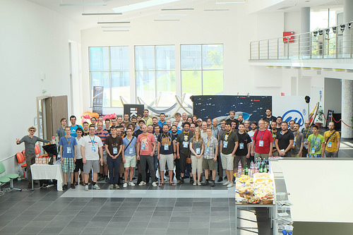
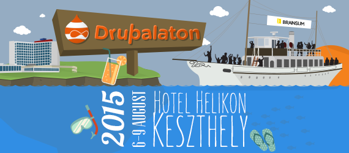

Drupal je nástroj na tvorbu webových stránok, je zadarmo, tvorený širokou komunitou. Umožňuje ľahké vytvorenie, aktualizáciu a spravovanie webstránok bez nutnosti rozsiahlych technických vedomostí. Uživateľské rozhranie Drupalu umožňuje pridávanie podstránok, navigácie, obrázkov a súborov a jeho bezpečnostné prvky umožňujú nastavenie rôznych úrovní oprávnení pre užívateľov. Ako stránka rastie, je jednoduché pridať rôznu funkcionalitu z tisícov modulov, ktoré sú dostupné na stiahnutie. Drupal je odporúčaný ako jeden z najlepších webových frameworkov a jeho použitie vysoko rastie.
DrupalCamp CS 2015 - spätný pohľad organizátorov
17 august, 2015 - 10:16 poslal sdaCez víkend 5–7.6. 2015 sme mali to šťastie zažiť prvý ČeskoSlovenský DrupalCamp – DrupalCamp CS.

Slnko, voda a Drupal na Drupalaton 2015!
8 júl, 2015 - 10:59 poslal mogdesign
Poďte na Drupalaton, ktorý sa bude konať 6.-9. Augusta v Keszthely, pri Balatone!
Odosielajte maily z views
4 júl, 2015 - 12:17 poslal frankyeNa Druaple mám rád flexibilitu a možnosti, ktoré nám dáva rozhranie ako fields, views, rules a podobne. Dosiahnuť sa toho dá skutočne veľa, niekedy je ale jednoduché a užitočné riešenie len za dverami, ktoré treba otvoriť, ale kľúč nie je úplne že v dierke – treba ho nájsť.
Dnes som riešil požiadavku, ako odoslať maily z views v Drupal7.
Drupalcamp už tento týždeň!
1 jún, 2015 - 09:59 poslal mogdesignČeskoslovenský Drupalcamp je tu už tento víkend. Prinášame ti rýchlu rekapituláciu, čo všetko ťa tam čaká.
Stretni hviezdy DrupalConu v Bratislave
Responzívny web, Drupal a Google
4 máj, 2015 - 16:37 poslal frankyeSkontrolujte si svoje weby skôr, než vám vaši zákazníci začnú volať…
Google už dlhšiu dobu upozorňuje, že od 21.
Drupal meetup v Bratislave
24 marec, 2015 - 11:22 poslal miromZajtra, 25. marca, budeme mať ďalšie z Drupalových stretnutí v Bratislave. Môžete sa dozvetieť niečo nové o Slovenskej Drupal Asociácii a jej plánoch na tento rok a chalani z iKOS Slovensko prídu porozprávať o ich vývojárskom workflowe.
Záleží nám na tvojom názore!
5 január, 2015 - 22:42 poslal adminAko ste už asi zaregistrovali, začíname s prípravou DrupalCampu. Aby sme vedeli pripraviť podujatie presne šité vám na mieru, potrebujeme vyplniť nasledujúcu anketu.
OTVORIŤ ANKETU
Čo je nové v slovenskej drupal komunite?
6 november, 2014 - 17:05 poslal miromPosledných pár mesiacov sa snažíme priniesť trochu života do slovenskej drupal komunity. Tu vám prinášam prehľad, čo sa nám podarilo a čo sa chystá v najbližších týždňoch.
Drupageddon - moja (nová) zábavka
28 október, 2014 - 17:47 poslal frankyeNa tieto dni som mal niekoľko variant plánov, čo budem robiť a nerobiť, ale človek mieni a život mení a tak sa zaoberám niečím úplne iným.
Ako sa už množstvo drupalistov dozvedelo, v posledných dňoch je zasiahnutých niekoľko drupal webov (https://www.drupal.org/…ORE-2014-005) a ja som tým šťastlivcom, ktorému sa podarilo dostať medzi nich a tak som
Posledný betablocker odstránený
20 september, 2014 - 13:45 poslal mirom
Pred chvíľou na twitteri ma privítala potešujúca správa:
That, my friends, is the status of the last D8 beta blocker issue. pic.twitter.com/gcXEltLwV5
- « prvá
- ‹ predchádzajúca
- 1
- 2
- 3
- 4
- 5
- 6
- 7
- 8
- 9
- …
- nasledujúca ›
- posledná »